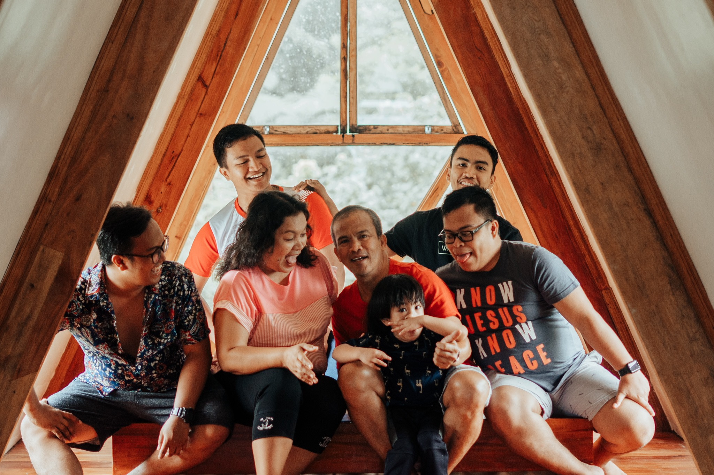

I am a music lover, as well as an instrument player. I can play bass, as well as some basic drums. However, the instrument I spend most of my time playing is the guitar. I first learned to play guitar in 9th grade of junior high-school; my origin story as cliché as that of the next guitar player; learning guitar to impress a girl. Yes, I started learning guitar to impress my then crush, now my girlfriend for five years. As time went by, I learned to love guitar and I also ended up playing for my home church’s worship team.
I joined my first oratorical contest in 8th grade of junior high school. Although it was neither my first exposure to public speaking, nor was it my first public speaking contest, it was the first of the three-year streak that was to come in my junior high school years. The theme for the contest for that time was about poverty. I was chosen by my coach, possibly through my classmate’s recommendation. Of course, I still had to prove myself, and that’s how I got the spot. On the day of my first regional level oratorical contest, I managed to get 2nd place.

For the next three years of junior high school, I would then represent my alma-mater Misamis Oriental General
Comprehensive High School in oratorical contests and one extemporaneous speech contest. Winning 1st place in the RDRRMC
oratorical speech contest, and 2nd place in the BALAOD Mindanao extemporaneous speech contest. Of the other contests,
finished in 2nd place.
After junior-high school it was senior-high school where it was mostly quiet, but nonetheless allowed me to experience
new things mostly on the academic side.